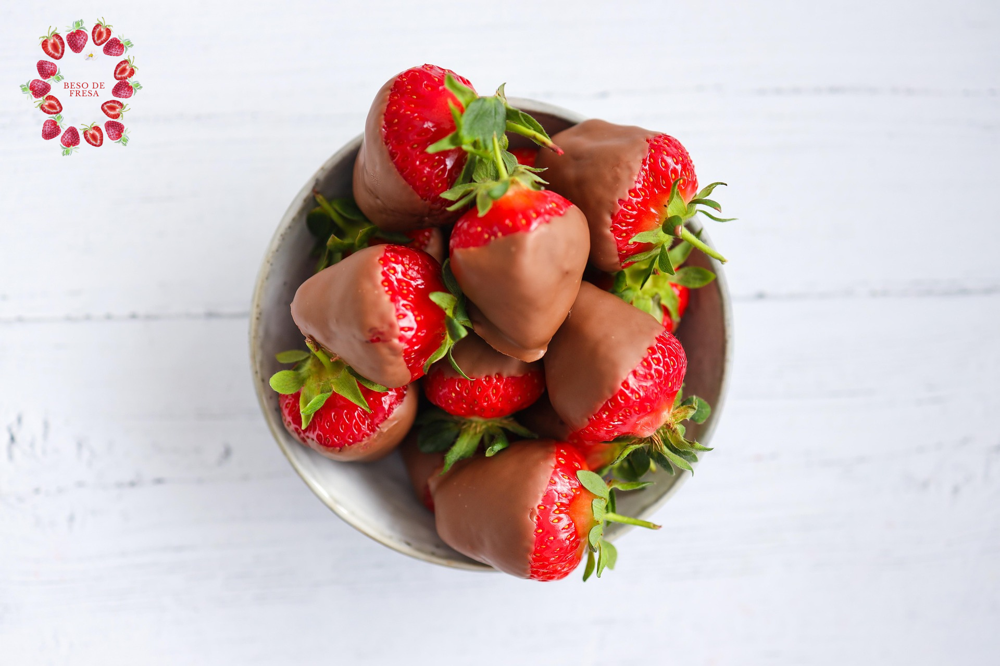

este es mi primer articulo
este es mi segundo articulo
¡Hola, mundo!
Bienvenidos a nuestra tienda fresona
Nuesta pagina Web presenta nuestro emprendimiento en postres enfocados exclusivamente a los amantes de las fresas. Nosotros somos Beso de Fresa.
Menú fresón
- Beso de Angel
- Bollitos fresones
- Vasito de besos
- Fresitas cubiertas
- Jaleas
Productos
Lo que hace tan especial a nuestros productos aparte de sus icónicos nombres son las recetas secretas de la casa que vuelve irresistible a cada postre fresón.
¡Promociones!
Conocemos bien a nuestros clientes por eso hemos diseñado el día más fresón de la semana